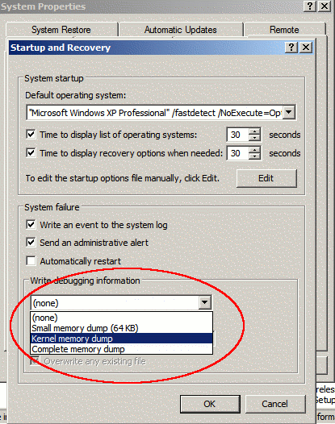
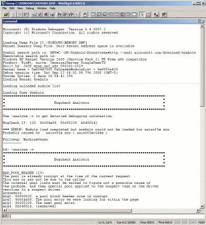

At a minimum, you'll want to be able to use the following tools for debugging drivers:
The classic debugging technique is simply using print statements to output the values of variables where you expect a problem is occuring. You'll note that DbgPrint and the other KdPrint macros use printf-style string formatting and you may include variables in your debug output. You'll want to be especially careful though, and check in MSDN what your output data type *should* be, as printf-style formatting may require you to specify not just integer, but long integer, unsigned integer, short integer, or some other combination of quantifiers. You may simply run the DbgView program to have it read from the kernel debug print buffer. If you'd like to see debug print statements in the kernel debugger, read on.

You'll want to enable crash dumps if you have a driver that causes the blue screen of death (i.e. a kernel 'bug check'). There are three different styles of memory dumps, and Windows XP always creates a minidump, whether you like it or not. The three different types of memory dumps are:
You'll need a pagefile at least as large as the memory dump you have requested the system to perform. For a complete memory dump, if you have 1024 mb of RAM, you'll need a pagefile at least a gigabyte in size! For the small memory dump, you'll need 64 K (you probably have a pagefile at least double this size). For the Kernel memory dump, you'll need somewhere in between, depending on how much of the kernel is in memory at the time of a crash.
To enable crash dumps, visit the "System" icon in the Control Panel, and click on the Advanced tab. Under "Startup and Recovery," choose the "Settings" button. At the bottom of the window, you'll see a drop down list where you may select one of the crash dump types, along with where to store it. When the system boots after a crash, it will extract the dump from the system's pagefile and write it to the specified location.
While the kernel debugger may seem arcane, it has a very good automated system for crash dump analysis. It also now allows you to debug the kernel while it is running. After installing the kernel debugger, you'll notice a program called "Global Flags" in the same program group. Run that first, and check flags like "Buffer DbgPrint Output" in each tabbed pane. Once you've done that, go ahead and open the debugger.
First, let's set up the symbols in the debugger. From the File menu, select "Symbol Path." If you downloaded and installed the symbols into C:\Directory, you'll want to enter that path into the dialog box. If you'd like to have the Kernel Debugger download them from Microsoft into C:\Directory as needed, enter SRV*C:\Directory*http://msdl.microsoft.com/download/symbols as your symbol path. Microsoft offers the use of the symbol server for free to one and all, and that server has symbols for most of its major operating systems. Click okay to leave the symbol path dialog box, and you're ready to debug!
To open a crash dump, select "Open Crash Dump" from the File menu. It will create a new workspace where you may have to re-enter the symbol server information -- "the crash dump workspace." Save the symbol server preferences by saving the workspace, once you have the symbol path setup correctly. Check out sample output from a Kernel Memory Dump opened in WinDbg. I've also included the following screenshot of the output. Note the command prompt.
In this instance, the debugger's automated analysis has decided the crash was probably caused by naiavf5x.sys, a kernel filter driver for some popular virus scanning software. Following the debugger's suggestion, we can type "!analyze -v" for a detailed analysis (see the output).
Yikes! It sounds like somewhere we had some corrupted memory in the kernel. This type of error could be caused by any number of hidden sources that accidentally touched memory they shouldn't have. Notice that the debugger will show you a stack of trace of what functions had stack entries (the call order) during the crash, along with other information like a more descriptive error code (BAD_POOL_HEADER) and the address of the memory violation.
Some other useful commands for analyzing your crash dump are: !drivers, !kdext*.locks, !memusage, !vm, !errlog, !process 0 0, and !process 0 7. Check out the section titled "Analyzing a Kernel-Mode Dump File with WinDbg" in the Debugger's help for even more commands. The help files included with the Kernel Debugger also provide a huge resource of bugcheck codes, error code descriptions, and commands for analyzing all sorts of things. Note that you can attach the debugger to other things like executable images and live kernels, though that is probably out of the scope of this guide.